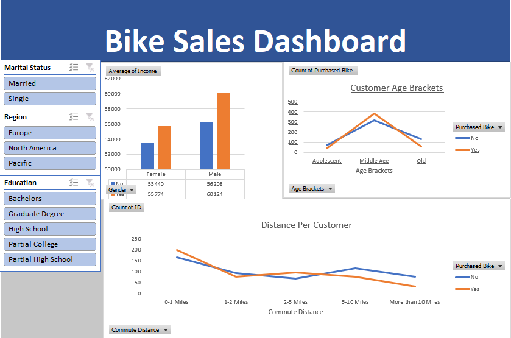

I'm thrilled to share with you some of the exciting projects I've worked on that demonstrate my skills and passion for data analysis. As a dedicated data enthusiast, I've harnessed the power of various tools and technologies to turn raw data into valuable insights.

Shark Tank India Project
In the realm of Python EDA, I've delved into diverse datasets, uncovering hidden patterns and trends that drive informed decision-making. Leveraging libraries like Pandas, NumPy, and Matplotlib, I've crafted insightful visualizations and interactive dashboards to make complex data understandable and actionable.

Tableau Visualizations
My Tableau projects are a testament to my ability to transform complex data into engaging visual stories. I've developed interactive dashboards that not only showcase key metrics but also provide a dynamic platform for exploration. From sales performance to market trends, my Tableau visualizations offer intuitive insights for both technical and non-technical audiences.

Excel
Excel has been a versatile companion in my data analysis journey. I've harnessed its power to clean, organize, and analyze data with precision. From financial modelling to inventory tracking, my Excel projects demonstrate my knack for turning data chaos into structured insights that support strategic decision-making.

SQL
As a data analyst, I'm no stranger to the world of databases and SQL. I've designed and optimized SQL databases, querying millions of records efficiently. From customer segmentation to cohort analysis, I've harnessed the power of SQL to extract meaningful information, empowering businesses to make data-driven choices.

Power BI
In this project, I meticulously analyzed and visualized data of top data professionals from the top 5 countries. The dataset encompassed crucial metrics like happiness index and work/life balance. Through interactive dashboards, my project offers a deep understanding of how geographical location correlates with professionals' well-being and job satisfaction.


Car Price Prediction using Python
In this project, I used Python in Jupyter and I worked on the dataset containing car price, model, colour, and company name. Firstly, I cleared the data
data set, using various Python methods. After, that I used Sklearn for model making.

Titanic Classification using Python Machine Learning
In this project, I used Python in Jupyter and My project aims to make a model for predicting whether a person alive or not. For that, I used the Classification model.
I am a passionate data analyst with a strong foundation in Python and R programming. My experience
includes crafting insightful visualizations using tools like Tableau and Power BI. I excel at data
analysis in Excel and SQL, allowing me to uncover meaningful insights from complex datasets.
With a commitment to continuous learning, I am eager to expand my skills and contribute meaningfully
to data-driven projects. I thrive on transforming raw data into actionable insights that drive
informed decision-making.